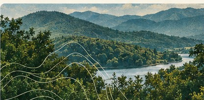
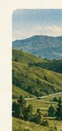
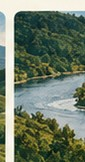
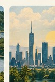
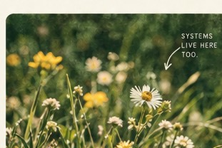

A more connected view of technology.
Every digital system relies on something physical — energy, water, land, infrastructure, and the communities surrounding it. Fieldline Systems explores what becomes visible when we stop separating technology from the environments that make it possible.
LEARN MORE


TECHNOLOGY × ECOLOGY
INFRASTRUCTURE × PLACE
Four interconnected systems.
DIFFERENT SYSTEMS.A SHARED FUTURE.
Technology
Digital systems, AI, and computing in the real world.
01Ecology
Natural systems, resources, and biodiversity.
02Infrastructure
Energy, water, land, and the built environment.
03Place
Communities, policy, and local context.
04A more resilient future.
We explore the material footprint of digital systems, from data centers and energy use to the communities and ecosystems they touch. Our work brings together technology, environmental systems, and real-world contexts to support more equitable and sustainable futures.
OUR APPROACH